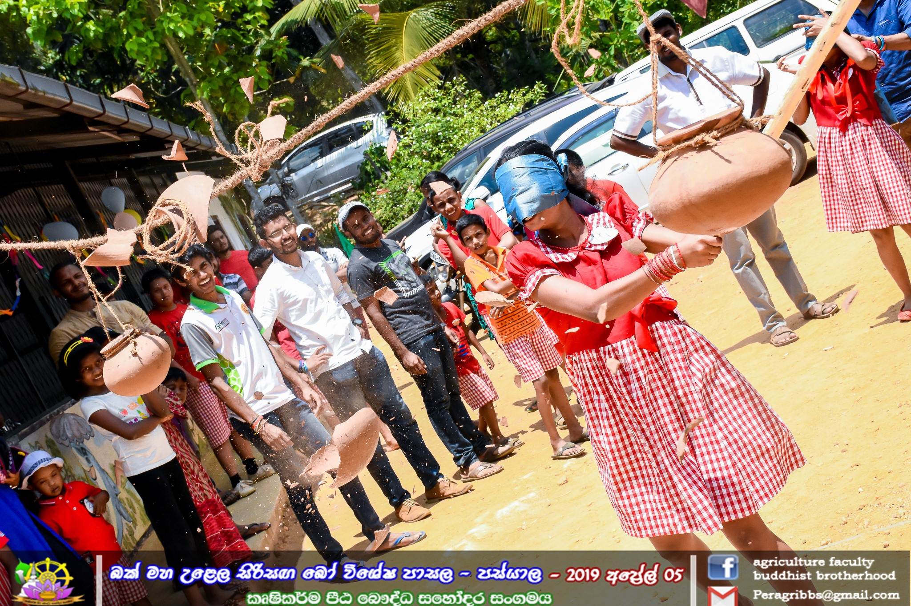
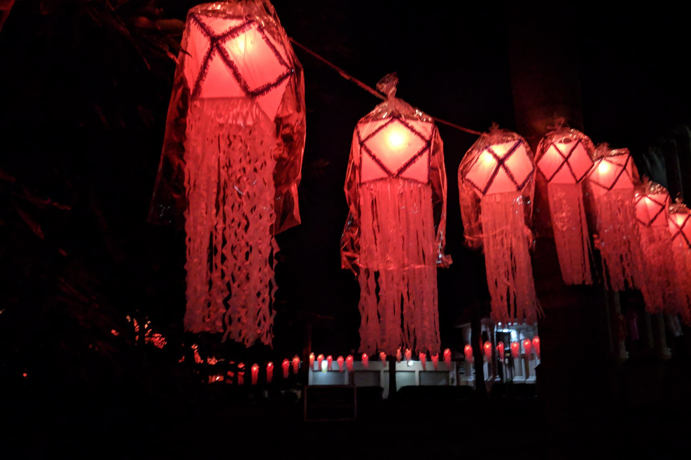
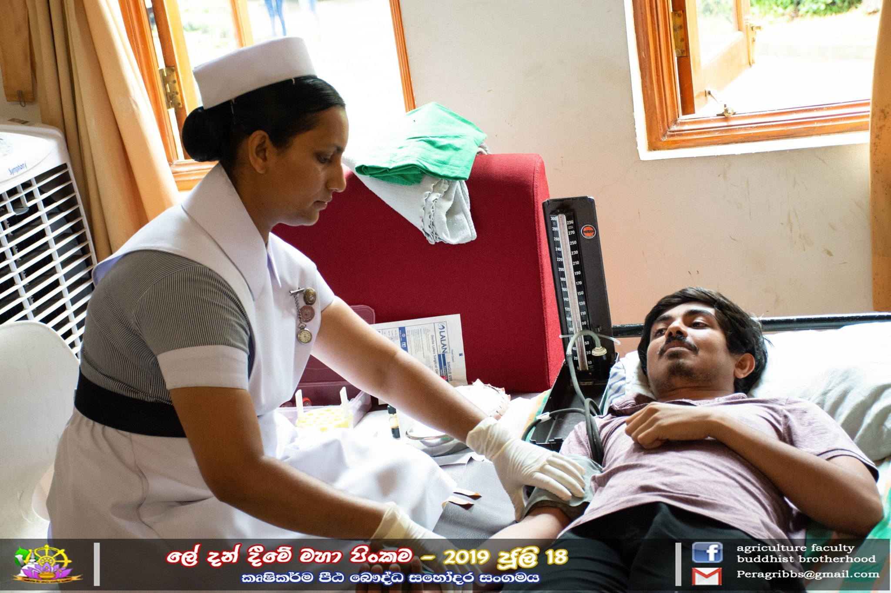
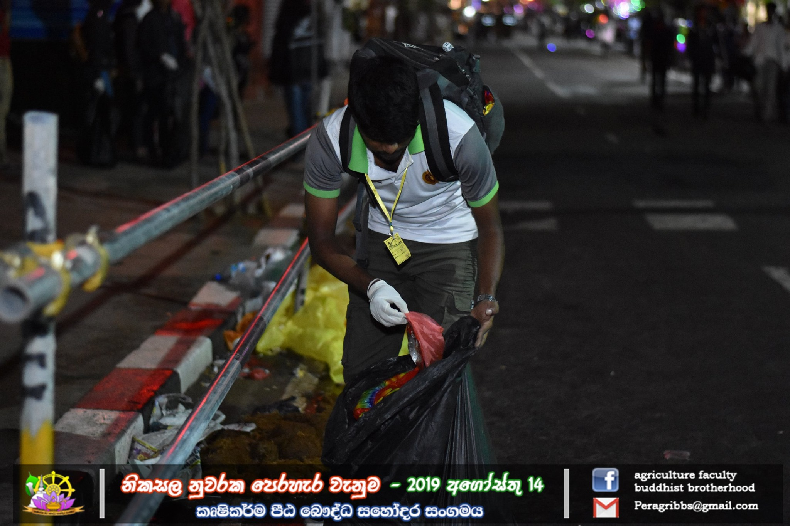
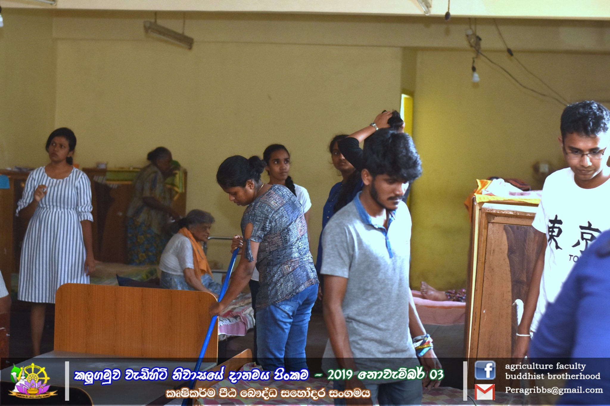
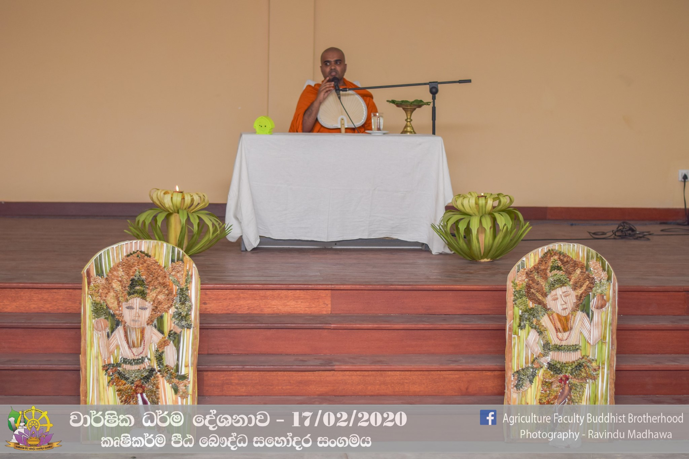

සිත්මංසල වෙසක් කලාපය
යොමුව
මුල්පිටුව
වෙසක්පත් නිර්මාණ(අත්කම් හා චිත්ර)
වෙසක්පත් නිර්මාණ(ඩිජිටල් මාධ්ය)
වෙසක් බැතිගී
කෘෂිකර්ම පීඨ බෞද්ධ සහෝදර සංගමය






කෘෂිකර්ම පීඨ බෞද්ධ සහෝදර සංගමය විශ්ව විද්යාල ප්රජාව ප්රමුඛ සමස්ත සමාජයට සම්මා සම්බුදු රජාණන්වහන්සේගේ ශ්රි සද්ධර්මය සමීප කිරීම, ජාතික සමාජීය සේවය අරමුණු කොටගත්, පෙරාදෙනිය විශ්ව විද්යාලයේ කෘෂිකර්ම පීඨයට අයත් ශිෂ්ය සංගමයකි.
පේරාදෙණිය විශ්ව විද්යාලය
කෘෂිකර්ම පීඨය
කෘෂිකර්ම පීඨ බෞද්ධ සහෝදර සංගමය
කෘෂිකර්ම පීඨ කලා කවය